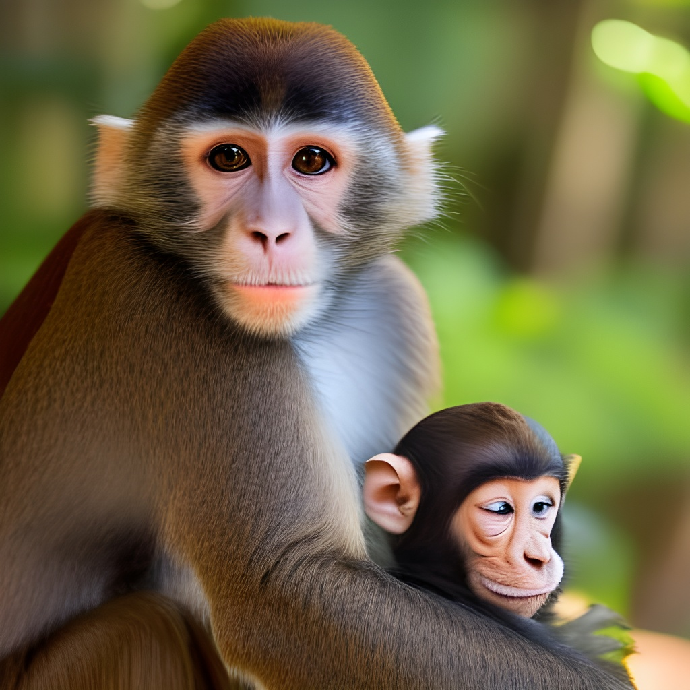
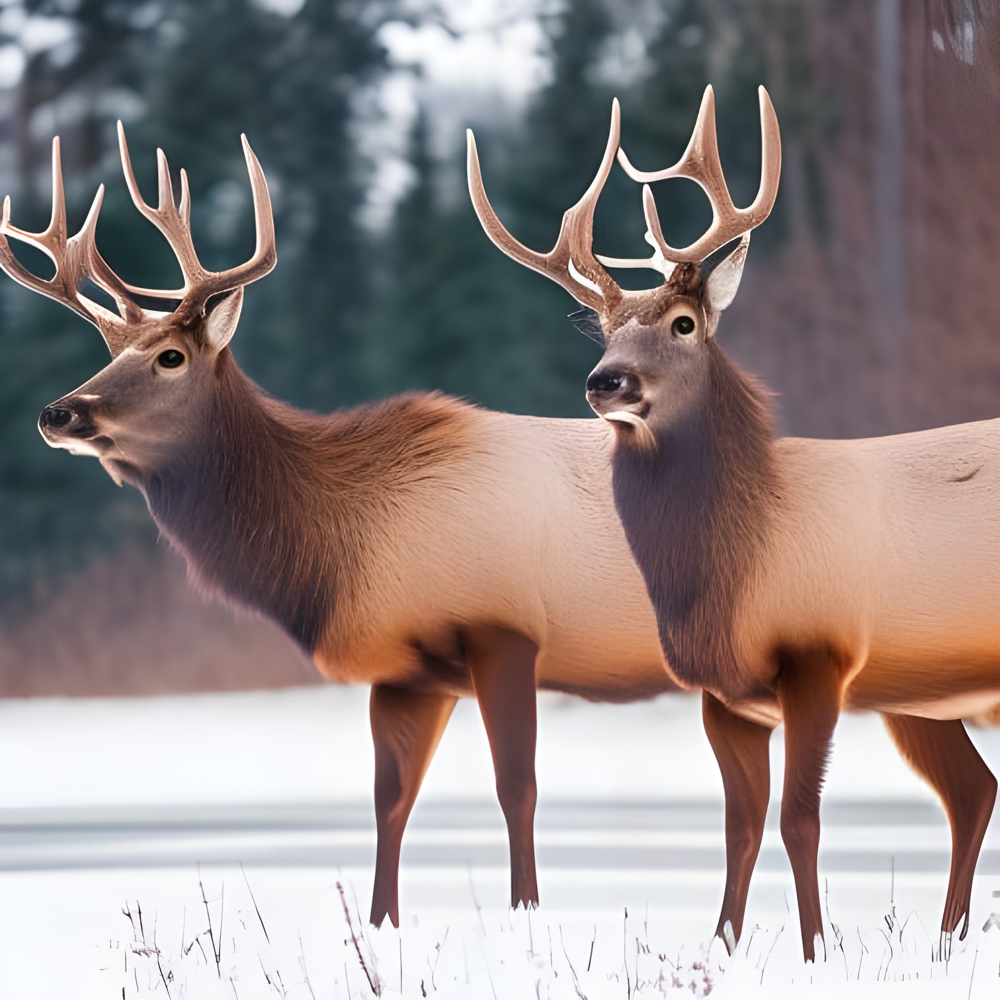

Animals of Africa

Our team of Wildlife Warriors in Africa has spent years looking for different opportunities to help curb the massive poaching industry within the continent. To expand knowledge surrounding poaching and the thousands of species across Africa, Wildlife Warriors and their allies have created a gallery to display their findings and spread awareness.
Animals of Australia
This cuddly duo was photographed within our very own backyard over at the Australia Zoo. This mating pair Zoe and Marco were both rescued during the massive fires that spread over Australia last year.
Animals of North America

The Americas are ripe with vast natural expanses that contain some truly breathtaking species. These two elk were spotted in Southern Alberta on the 14th of January 2020 on their way to the lake.
Animals of South America

This is Rose, one of the lovely attendants of the Sloth Sanctuary of Costa Rica. Rose and many of her friends are kept safe on a vast expanse of lush green jungle, a natural resource that the wildlife of Central America is dependent upon.